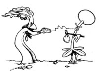
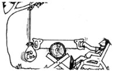

Most folks wouldn't think a refrigerator'd grow much other than mold on bread. But William Kiewel of Crookston, Minnesota made a perfect spring seed-sprouter out of a "well-used" icebox that he got for only $20. Bill simply unplugged the food chiller and installed a small thermostatically controlled heater (set at 75°F). Then all he had to do was add the seeds and shut the door. The dark, humid atmosphere proved to be perfect for sprouting all his tomatoes, cukes, squash, peppers, etc. (A plant starter like Bill's would be especially helpful to folks whose homes get pretty chilly on spring nights.)
But Bill doesn't stop there. Come fall, he takes the heater out, plugs in the fridge (set at about 40°F), and uses it to force flower bulbs. With this method, he has fragrant hyacinths, tulips, daffodils, and crocuses decorating his home... even when it's 20 below outside!
You say you really want to build a fence this year ... but you've got soil so rock-hard it'd blunt a steam shovel, and an "inconvenient" shallow creek runnin' through your back forty besides? Gary Blanford of Louisville, Kentucky has a simple solution to help you out. Just use an old tire as a form, fill the discarded road rider with ready-mix concrete, and stick your post in. The round anchor rig'll hold your fence stands secure ... on land or stream. (You can even use a big old truck tire for your base, if you figure that you'll need extra ballast.) Best of all, Gary notes, this handy tip recycles "eyesore-ing" countryside litter into useful homestead items.
Well, we never thought we'd get a "down-home" country tip from Ivan Pavlov! But Marjorie Watt of Old Monroe, Missouri tells us that an idea she borrowed from the eminent Russian scientist helped her get out of a very difficult situation. Marj's brainstorm came to her when a fence washed away and she-and her husband-spent the next four days searching for their strayed calves. After that, the Watts decided to ring a cow bell every day at 6:00 p.m.- right before they fed the young heifers-to try to call the animals home.
Did the treatment work? Heck, those hungry calves came a-scurryin' at the sound of that dinner clanger after only three days! Not only that, says Marjorie ... "now everything answers the call of the bell: calves, horses, ducks, geese, and pigs!"
Do you hate shelling out cash at the local nursery for plain old sticks ... just to prop up your tomato plants? Then quit doing it. You can get the best stakes in the world for nothing (says Charles Dowling of Shreveport, Louisiana) at the local cemetery's flower dump. The heavy-gauge wire tripod stands (florists use 'em to display their funeral arrangements) that you'll find at "flower graveyards" are very sturdy. And such plant proppers come in various heights, require no maintenance, last for years ... and even fold flat for storage. Besides that, pushin' their sharp-tipped legs into the soil is easy. (The tripods can also double as display stands at arts and crafts shows.)
So check your cemetery sexton's office for the location of the flower dump near you, and get some free "veggie easels" for your tomatoes to lean on!
Did you ever think there must be a better way to sow those hard-to-handle tiny garden seeds than letting them slip (all in one place) through your fingers? Don Snyder-who holes up in Marianna, Florida-felt that way, too. So he created some homemade seed-sprinklers out of old spice jars. First, Don drilled the lid openings slightly bigger (enlarging the punctures with a nail would work, too). Then he loaded his future carrots in an old onion salt container (and his radish motes in a rescued garlic salt holder), went out in the garden ... and started shaking. The result was some very easy-and even -plant sowing that stretched his seed package (and his money) while it reduced the need for later thinning.
What Don Snyder's spice-sower did for the little seeds, Alfred Goolsbee's invention does for the big ones. This Pt. Neches, Texas native made a no-stoop, no-crouch planter that consists of a funnel attached to some lightweight aluminum or plastic pipe. Al says, "Just take this seed tube and a long stick into the garden with you at sowin' time. Poke a hole in the prepared soil bed with your stick, insert your pipe in the opening, and drop the seed down the funnel. The kernel'll land right where you want it. Then simply flip the earth back over with your stick ... and ease on down the row!"
When those spring rains hit your windshield and the whole dang inside of your car fogs up ... you can be in for some pretty hairy traveling. But you don't have to drive blind ... not if you lake this tip from Glasgow, Kentucky's Ronald Hunter Simply buy a large felt blackboard eraser (you know, the kind Teacher made you clap after school) at a large variety store. One swipe of the slate-scrubber'll wipe that murky window clean. And the felt block will store right comfy in your glove compartment, too.
Anna Laitala of Ely, Minnesota learned by accident about the strange powers of "Rhubarb Magic". Weeds and quack grass were invading -successfully-every side of her beloved garden ... except for the one edge lined with a row of rhubarb plants. Curious, she moved some of the tasty-stalked (but poisonous-leaved) pieplants over to another besieged border. The rhubarb "wall" blocked attacking underbrush there, too!
Before long, Anna was using those potent perennials everywhere. Discarded leaves and flower stems eliminated weeds and pests between the rows of her crops. Huge rhubarb blades draped over cabbage and cauliflower plants thwarted cabbage worms. And slit fronds-wrapped around her young broccoli shoots- successfully checkmated cutworms.
Any plant that can do all that must be-as Anna says-"truly magical".
Tired of swallowing sugar-filled, artificially flavored commercial gelatins? Well, you don't have to stop eating the sweet jellied concoctions. Instead, follow this recipe from Lorraine De Souza of Chester, New Hampshire ... and create your own! First, brew up a pot of your favorite herb tea (make the batch potent so it'll maintain its flavor after dilution). Next, mix- until dissolved-2 cups of this hot herb broth with 2 packets of unflavored gelatin and honey (to taste). Stir in 2 cups of cold water, let the finished treat chill, and then sit back and relax with your "junkfree gel joy"!
To make this homemade goodie even tastier, Lorraine suggests substituting fruit juice for the cold water... and adding some chunks of fresh fruit as well.
Robert Weiss of Stoughton, Wisconsin has figured out a nature-loving idea to try at your friends' spring weddings. When the bride and groom leave the church (or field or whatever), don't throw rice ... throw bird seed! You won't waste the grains, or have anything to clean up. Some feathered wedding guests will take care of it all.
A one-man two-man saw?! That's what Ray Ginsbury of Stratford, New Hampshire had to rig up when he couldn't find anyone to help him use his two-person woodcutter. Ray hung a 20-pound, rock-filled sack from a tree branch. Then, he positioned his log-loaded sawbuck under the limb so he could tie the bag to one end of his crosscutter. Ginsbury grabbed 'holt of the other end of the saw, pulled once, and then-like a pendulum-the tree-tied bag pulled the blade on back.
Ray was real pleased with his bag "buddy". He said it was the only partner he'd ever had that didn't tire out.
Do you remember Lois Meloney's idea-back in MOTHER NO. 52, page 14-for usin' those leftover cardboard toilet paper tubes? ( Sure you do!) Well, Annette Marcotte of Burnt Hills, New York was so struck by Lois's idea that she decided to contribute her own restroom roller suggestion. Ms. Marcotte sticks the tubes inside of flashlights before she drops in the batteries. That way, the tiny power plants-and the terminal connections-fit tight and stay tight. Ever since Annette started using battery "collars", she's never had to shake, cuss, or fiddle with a flashlight to get it working.
"Those old-fashioned 12-pocket hanging shoe bags can be used in every room in the home," writes Kathy Streich of Pine Island, Minnesota. And sure enough, Kathy's got sets of the helpful "kangaroo pouches" all over her house. One batch of the former footwear holders adorns her kitchen ... it contains wooden spoons, mixing whips, spatulas, and other large cooking utensils. Another is nailed low on the wall of her child's room, for the little fella to stash his toys in.
Ms. Streich even created a hanging "budget organizer" in her study. She labeled each shoe pocket with the name of a month ... and now she files her bills in them!
OK. Now it's YOUR turn! We've all come up with some practical, down-home, time-tested solutions to the frustrating little problems that bug us every day. Let's hear YOUR best "horse sense" ideas so we can share 'em and all benefit.
Send your pointers to Down-Home Country Lore, P.O. Box 70, Hendersonvllle, North Carolina 28739, and I'll make sure that the most useful of the suggestions will appear in upcoming editions. A one-year subscription-or a one-year extension of an existing subscription-will then be sent to each contributor whose tip does get printed In this column.-MOTHER .
|
 |
 |
|